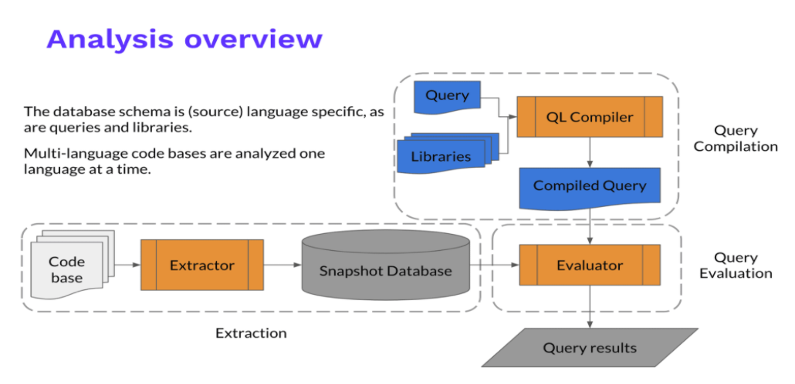

知其白，守其黑，为天下式。
CodeQL入门学习
简介
QL是一种查询语言，支持对C++，C#，Java，JavaScript，Python，go等多种语言进行分析，可用于分析代码，查找代码中控制流等信息。
CodeQL 的整体思路是把源代码转化成一个可查询的数据库，通过 Extractor 模块对源代码工程进行关键信息分析提取，构成一个关系型数据库。CodeQL 的数据库并没有使用现有的数据库技术，而是一套自己实现的文件系统数据库。
对于编译型语言，Extractor 会监控编译过程，编译器每处理一个源代码文件，它都会收集源代码的相关信息，如：语法信息（AST 抽象语法树）、语意信息（名称绑定、类型信息、运算操作等），控制流、数据流等，同时也会复制一份源代码文件。而对于解释性语言，Extractor 则直接分析源代码，得到类似的相关信息。
关键信息提取完成后，所有分析所需的数据都会导入一个文件夹，这个就是 CodeQL database, 其中包括了源代码文件、关系数据、语言相关的 database schema（schema 定义了数据之间的相互关系）。

CodeQL 自己定义实现了一套名为 QL 的查询语言，并提供了相应的支持库和运行环境。
安装
分析程序支持主流的操作系统,Windows,Mac,Linux
1 | mkdir codeql-home |
解压之后添加到环境变量
然后下载lib
1 | #切换到codeql-home |
首个测试用例可以参考：https://www.yuque.com/docs/share/738555ae-258e-4f27-8818-6024b8225488?#